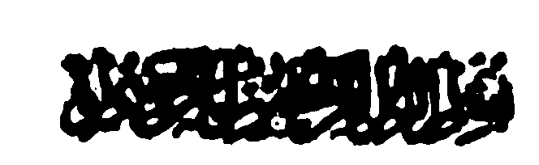

Lista-an o Madadalemon
PAMKASAN
BA-AD 1 – So Gona o Sambayang
PINTO 1 – So Manga Balas o Sambayang
- So Sambayang na Pola-os o Islam
- So Sambayang na Phelalas sa manga Dosa
- So Sambayang na Sabap a Kakharila-i ko Manga Dosa
- So Sambayang na Pekha-onab Iyan so Manga Dosa
- So Sambayang na Pephakatabang ko Kareregenan
- So Sambayang na Kiparat ko Manga Dosa
- So Sambayang na Khasabapan sa Kapakasoled sa Sorga sa Maga-an
- So Sambayang na Pephakasabet
- So Kinipaliyogaten o Allah ko Lima a Sambayang
- So Kipantag o dowa rak’at a Sambayang
- Pat Polo a Manga Bababa a Hadith ko Kalbihan o Sambayang
PINTO II – Tapa-os ago Lalangan ko Kibagaken ko Sambayang
- So Sambayang na Pageletan o Islam ago so Kufr
- So kibagaken ko Sambayang na Ka-awa ko Islam
- Da-a Labot o Allah ko Tao a Miyagak sa Sambayang
- Kala a Kalapis ko Kibagak o Isa bo a Sambayang
- So kibagaken ko Sambayang na Mala a Dosa
- So Kasiksaan o Tao a Pembagak sa Sambayang
- Piyakalek-lek a Khaoriyan ko Kibagaken ko Sambayang
- Isa ka Huqb sa Naraka Omani Isa a Sambayang a Malepas
- Da a Darepa ko Islam o Tao a Pembagak sa Sambayang
BA-AD 2 – So Gona o Barajoma
PINTO I – So Manga Balas o Barajoma
- So Sambayang a Barajoma na Dowa polo ago Pito a Kapakalelebi niyan
- So Sambayang a Barajoma na Dowa-polo ago Lima a Kapakalelebi niyan
- So Kasisiyapa o Manga Sahabah ko Barajoma
- Kapakalidas ko Naraka ago Kamaradika ko KaMunapik
- So Balas o Kasong sa Masjid Mapiya Miyapasad so Barajoma
- Saden sa Kadakel o Barajoma na Kala iyan-i Balas
- Tarotop a Sindao ko Gawi-i a Kaphangokom
PINTO 2 – Lalangan ko Kibagaken ko Barajoma
- So Sambayang a di ped ko Barajoma na di Tharima-an
- So Kalepas ko Barajoma na Di Patot ko Muslim
- So kagowad o Nabi ko Kibagaken ko Barajoma
- So Sambayang a di barajoma Malebod a kapendakepa-on o Shaitan
- So kokoman o Ibn Abbas ko Kibagaken ko barajoma
- So tao a miyagak sa barajoma na di phakagaga somodod ko Kailaya niyan ko Sindao o Allah
BA-AD 3 – So Gona o Kambayorantang na go so Kaphiya-piya ko Sambayang
PINTO 1 – Manga Pagaloin Pho-on sa Manga Ayaat ko Qur’an
- So panagontaman i iphera-ot ko Allah
- Sangat a siksa ko siran a da Siyap ko Sambayang
- So Munapik na iphetindeg Iyan so Sambayang a Bobokelen
- Masopi-it a siksa o siran a Pembinasa-an niran so Sambayang iran
- So simba o manga bokelo na di tharima-an
- So kathagompia ko Kapangalimbaba-an ko Sambayang
- So Sambayang na Malebod ko manga tao a manga-ngalimbaba-an
- So bantog o Allah ko siran a initindeg iran so Sambayang
- Balas o siran a mithoday Pantag ko Sambayang
- Balas o siran a inawa-an Niran so iga-an niran ka giyora-ok iran so Allah
- So bantog o Allah ko Kathoday
- So Kapakalelebi o simba ko kagagawi-i
- So balas o katatap ko Sambayang
PINTO 2 – Manga Totholan ko Kiyapaginetao o Manga Barasimba
- So taginepen o Shaikh Abdul Wahid
- So taginepen o Shaikh Mazhad Sa’adi
- So totholan o Abu Bakr Dharir ko sakatao a Kangoda-an a oripen
- So taginepen o isa a Shaikh
- So totholan o Shaikh ‘Atar ko oripen a babay
- So totholan o Sirri Saqti ko oripen niyan
- So totholan o Sirri Saqti ko sakatao a babay a barasimba
- So totholan o Shaikh Abu Abdullah Jala ko isa a tometembeng
- So kapangopera ko masa a Kazambayang
- So totholan o Abu ‘Amir ko sakatao a oripen a Babay
- So totholan ko Umar bin Abdul ‘Aziz
- So totholan ko Muhammad bin Munkadir
- So Sambayang o Thabit Banani
- So manga panagontaman o saba-ad ko manga tao a Barasimba
PINTO 3 – Manga Katharo a Inabat sa Manga Hadith
- So balas na saden sa kala o Ikhlas
- So balas o Sambayang a Mapiya
- So gona o Sambayang a Sonnat
- So Sambayang na aya Paganay a thimbangen
- So miyakarata-rata a Tekhao
- So karerenek ko Sambayang
- So Sambayang na Phakasapar ko piyaka-sisingay ago so manga rarata
- So Qunut ko Sambayang
- So manga sarat o mapiya a Sambayang a mosawir o manga Auliya
- So kipantag o manga Phamatiya-an ko Sambayang
- So Sambayang o saba-ad ko Manga Sahabah, go so manga Tabi-in, ago so manga Auliya
- Mala-i gona a thanodan